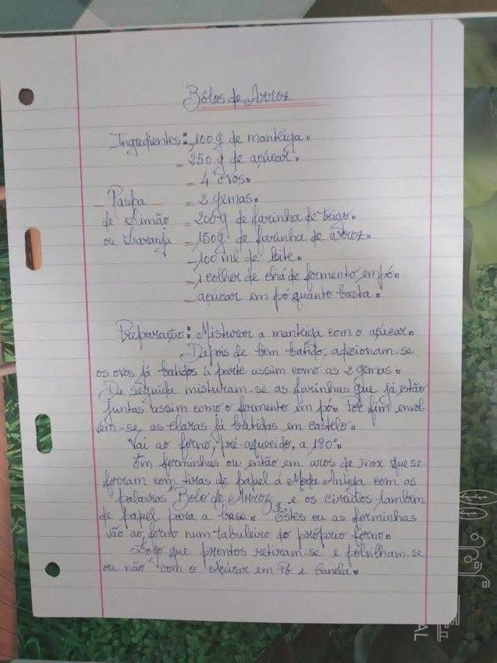

Bolos de Arroz
IndiceIngredientes
- 100 g de manteiga
- 250 g de acucar
- 4 ovos
- 2 gemas
- Raspa de limao ou laranja
- 200 g de farinha de trigo
- 150 g de farinha de arroz
- 100 ml de leite
- 1 colher de cha de fermento em po
- Acucar em po quanto baste
Modo de Preparo
---
